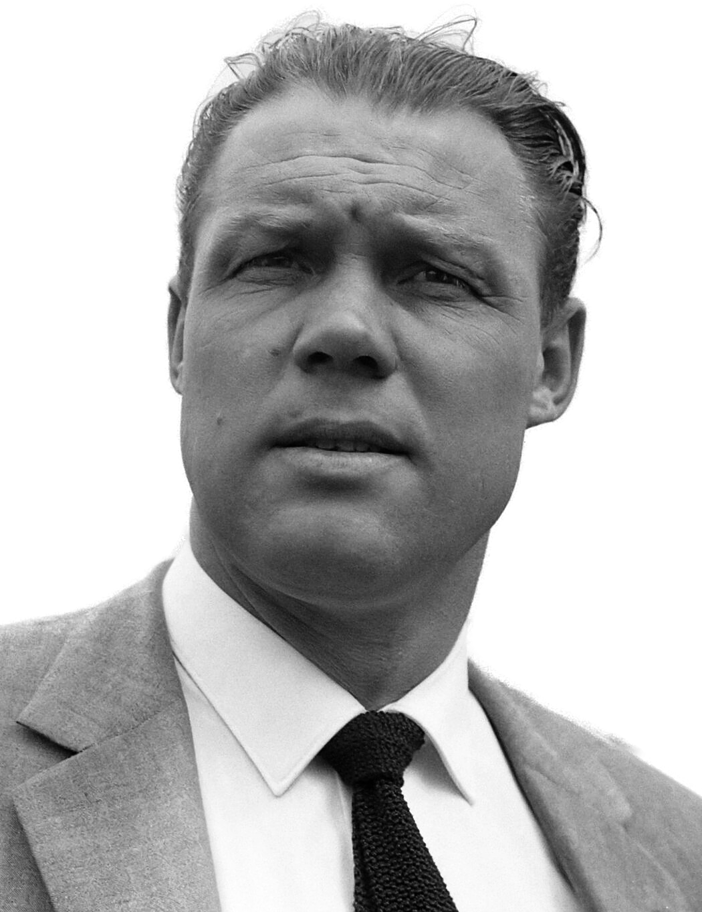
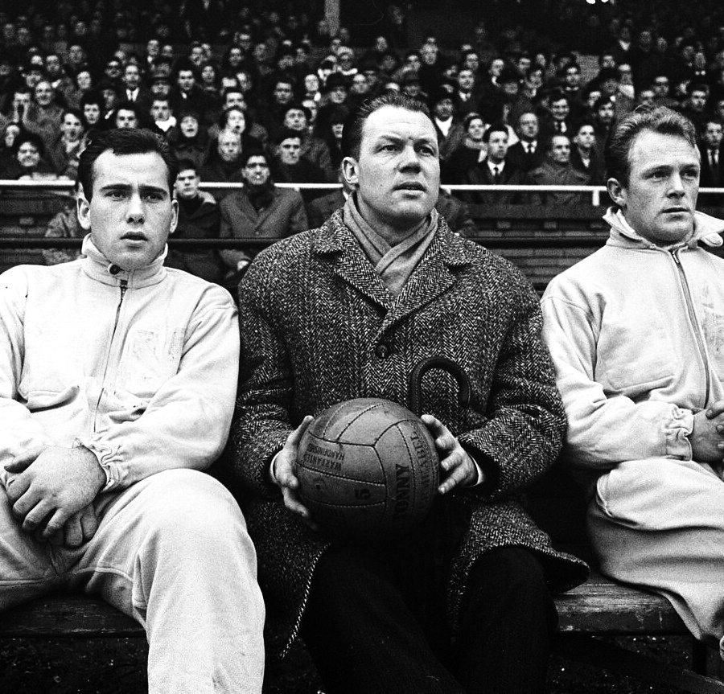
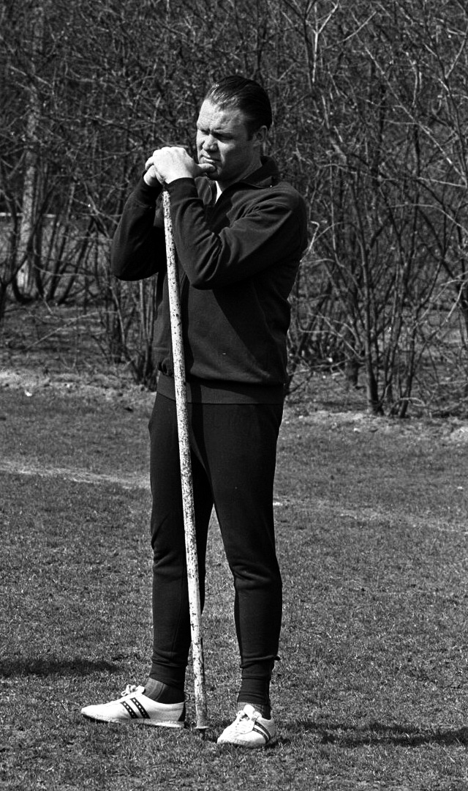
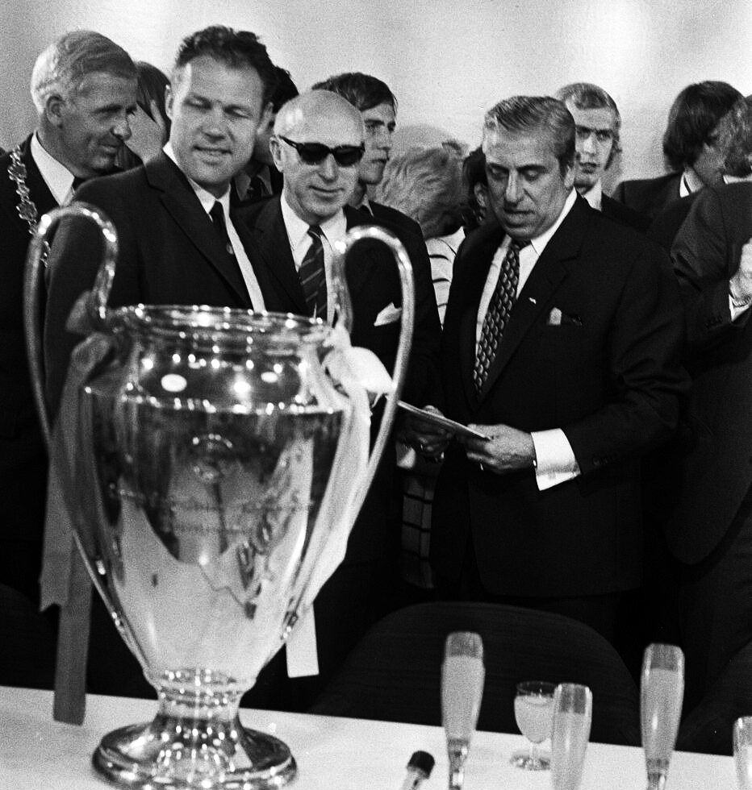

RINUS MICHELS
AJAX · ENTRENADOR
14/08/1966 · JOOST EVERS / ANEFO · CC0
SILBATO Y ESPALDERAS: RECREACIÓN
AULA: RECREACIÓN
ESCUELA PARA NIÑOS SORDOS · ÁMSTERDAM
ENE
1965
CALENDARIO: RECREACIÓN

AJAX-MVV · 24/01/1965 · ERIC KOCH / ANEFO · CC0
EL GENERAL
NUEVO ENTRENADOR
CLASIFICACIÓN
ZONA DE DESCENSO
RECREACIÓN

ENTRENAMIENTO · 09/04/1969
JOOST EVERS / ANEFO · CC0
PIZARRA: RECREACIÓN
1965
1971
CAMPEÓN DE EUROPA

SCHIPHOL · 03/06/1971 · ANEFO / NATIONAAL ARCHIEF · CC0
PORTADA: RECREACIÓN
PIZARRA: RECREACIÓN
FOTOS: JOOST EVERS, ERIC KOCH Y ANEFO, NATIONAAL ARCHIEF (CC0), VÍA WIKIMEDIA COMMONS
SILBATO, AULA, CALENDARIO, CLASIFICACIÓN Y PIZARRA: RECREACIÓN